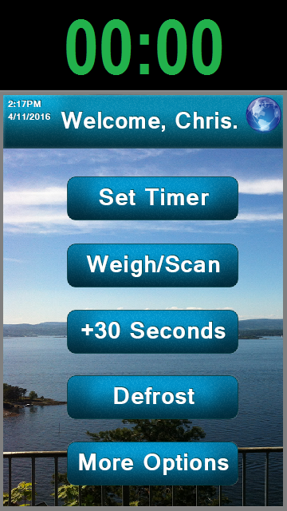

A hard working designer who enjoys all types of media content, I knew since I first started thinking
about college that I wanted to do something with media and the internet.
I have invested a lot of time into figuring out which areas I enjoy the most, and web design, game design,
and video editing are all topics that I specialize in.
From prototyping microwave interfaces to building multiplayer games, I have done all kinds of creative
projects.

From prototyping microwave interfaces to building multiplayer games, I have done all kinds of creative
projects.
On this website you can see a lot of the work that I've just described. Under "My Work" you can check
out some of my more technical projects. Under "Visuals", you can see some of the maps and infographics
that I have created.
There are download links for every project that I'm able to currently share so you
can check out my work as clearly as possible.